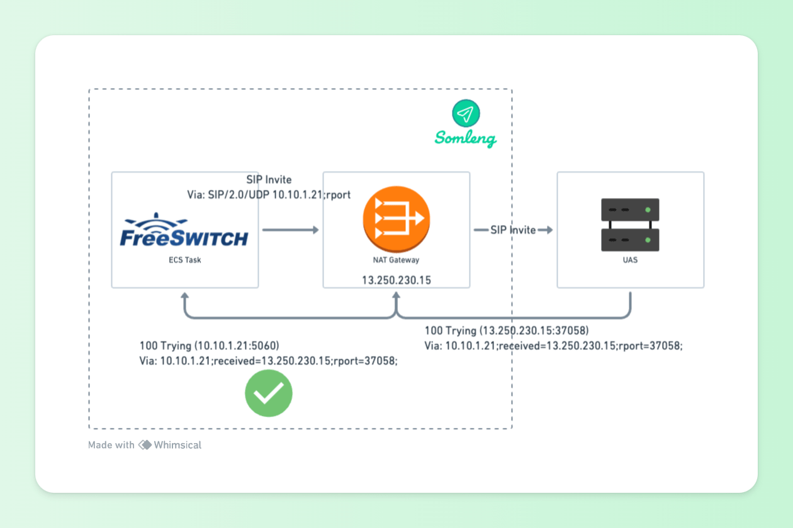
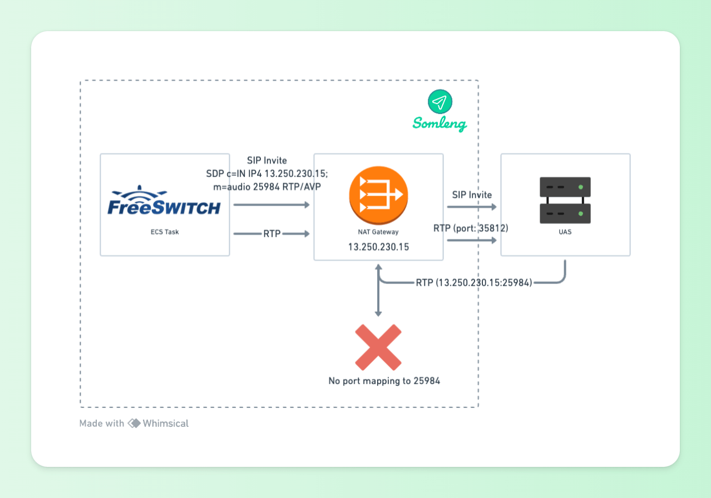
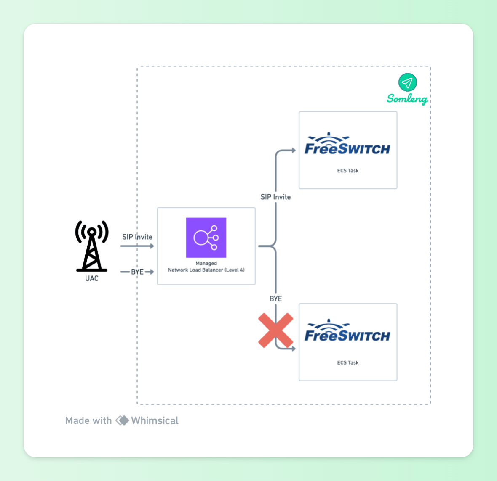
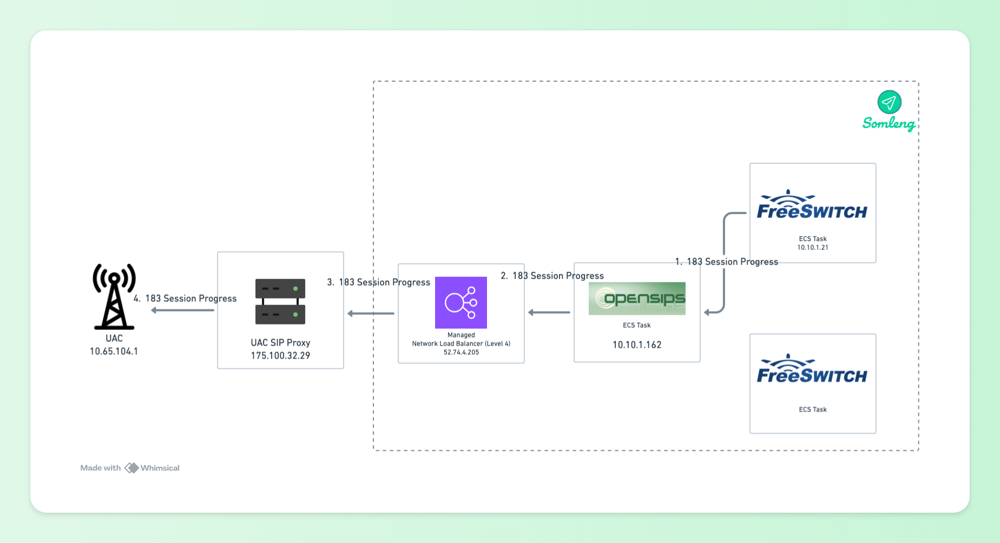
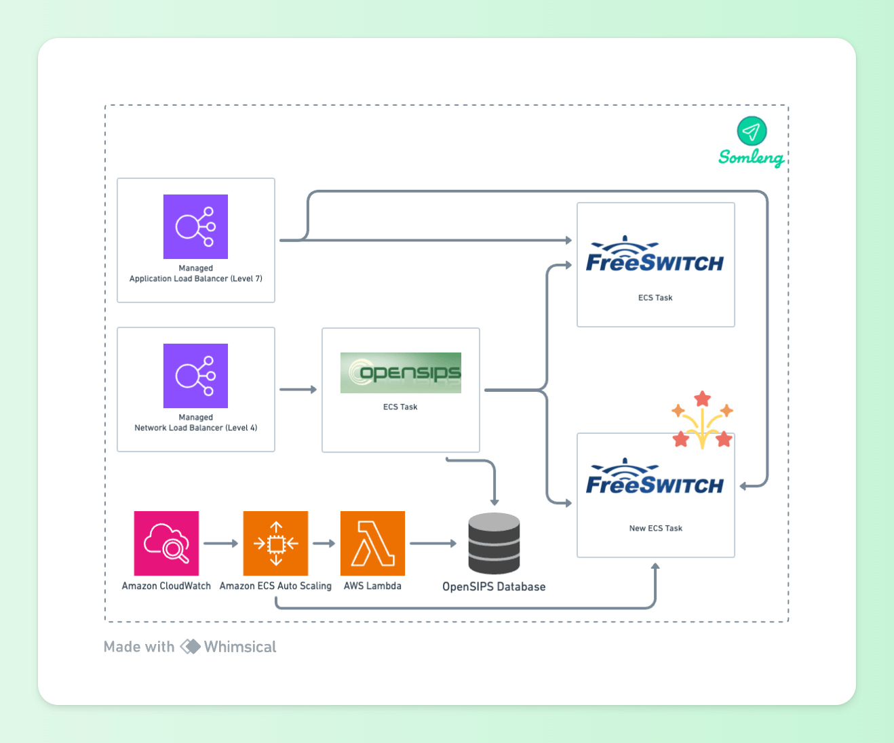

Somleng is an Open Source Communications-Platform-as-a-Service (CPaaS) and Telco-as-a-Service (TaaS). On the CPaaS side, Somleng includes an Open Source implementation of Twilio's APIs for Programmable Voice and Messaging as well as a Dashboard for customers to configure their account, manage their credentials, configure phone numbers, manage Text-to-Speech (TTS) etc. Somleng supports TwiML for programming voice and messaging flows.
On the TaaS side, Somleng includes a Dashboard and API for companies (aka Carriers) who want to provide their own branded Twilio-like service to their customers. Companies can create and manage accounts, SIP trunks, SMS gateways, manage customer billing etc.
Somleng is being used in a variety of different use-cases around the world. For example it powers telehealth services in Zambia and Guatemala and the National Early Warning Systems of Cambodia and Laos.
When considering the use-case for powering Early Warning Systems, an interesting problem arises. Most of the time the system is relatively idle, supporting only a few registration calls per minute. However in the case of an emergency, the system needs to be able to handle thousands of calls per minute.
We don't want to run over-provisioned servers all of the time because this will make the cost prohibitively expensive, but we need to be able to dynamically handle high loads.
The Somleng Dashboard and API is powered by a Ruby on Rails application connected to a managed PostgreSQL database which manages all of the business logic. This part of the application is relatively easy to auto-scale by placing the application behind a layer 7 managed load balancer such as AWS' Application Load Balancer.
The load balancer routes requests to ECS tasks which are running an Nginx reverse proxy and a copy of the Rails application. Cloudwatch alarms are configured to auto-scale the number of tasks based on CPU usage. When a new task is in service, ECS will register the new task with the load balancer and start routing requests to it. Conversely when the CPU utilization drops below a certain threshold a task is deregistered from the load balancer and terminated thereby saving cost. This is a relatively standard setup common for most web applications.
 Figure 1: Somleng Dashboard and API
Figure 1: Somleng Dashboard and API
In order to power programmable voice applications, we need to leave the application layer (layer 7) behind and drop down to the transport layer (level 4). There are a couple of Open Source communication technology platforms in the VoIP domain such as Asterisk and FreeSWITCH. At Somleng we use FreeSWITCH which acts as either a SIP user agent client (UAC) and SIP user agent server (UAS) depending on whether it is initiating a voice call or receiving a voice call.
When acting as a UAC, FreeSWITCH can also be placed behind an Application Load Balancer and placed in a private subnet behind a NAT Gateway as shown below:
 Figure 2: Somleng UAC Infrastructure
Figure 2: Somleng UAC Infrastructure
Internal API requests are received from Somleng via an Application Load Balancer to Nginx Reverse Proxies running alongside FreeSWITCH instances. This architecture allows FreeSWITCH to be auto-scaled up and down based on CPU utilization and/or session count without having to introduce any SIP aware load balancers.
There is one problem about this approach though which has to do with SIP and NAT. To understand this problem we need to understand a little bit more about the Session Initiation Protocol (SIP) and the Session Description Protocol (SDP).
In a SIP invite request, the UAC will insert a SIP Via header indicating the path taken by the request so far which helps in routing the responses back along the same path. Here's an example of a SIP Via Header:
Via: SIP/2.0/UDP 10.10.1.21;branch=z9hG4bKv5jFZ8am7aZQc
In the example above, the responses will be sent back to 10.10.1.21 at the default port
for
UDP 5060.
Here you can see a problem immediately with our infrastructure above. 10.10.1.21 is the IP address of the FreeSWITCH ECS task and is not publicly routable from the Internet. Therefore any responses from the UAS will not be received by the UAC. This is because FreeSWITCH (acting as the UAC) constructs the SIP header and is only aware of its own IP address and port. When the request passes through the managed NAT Gateway, it will do Port Address Translation (PAT) and change the actual IP and port of the request as shown below:
 Figure 3: UAC Behind NAT Gateway
Figure 3: UAC Behind NAT Gateway
To handle this situation Section 18.2.1 of RFC 3261 describes how a server must add a "received" parameter to the topmost Via header when it receives a request:
This parameter MUST contain the source address from which the packet was received.
This parameter was designed to assist routing of responses not only where NAT is involved but also where the upstream device has used a hostname rather than an IP address in the Via it inserted. The default behavior for routing of SIP responses over UDP, as described in RFC 3261, is to use address and port information embedded in the relevant Via header - the address is taken from the "received" parameter value and the port is taken from the "sent-by" component. If there is no port, it defaults to port 5060 for UDP and TCP, or port 5061 for TLS.
Here's how the Via Header looks when the "received" parameter is added by the UAS:
Via: SIP/2.0/UDP 10.10.1.21;received=13.250.230.15;branch=z9hG4bKv5jFZ8am7aZQcThe UAS has added the "received" parameter which correctly corresponds to the public IP of the NAT gateway. However this alone is not enough. Responses from the UAS will still be sent to the port 5060 (default for UDP). Since this port is not mapped by the NAT gateway, responses cannot be received by the UAS.
 Figure 4: UAC Behind NAT Gateway with "received" parameter
Figure 4: UAC Behind NAT Gateway with "received" parameter
This problem was addressed in RFC 3581 It describes the "rport" parameter as follows:
When a server compliant to this specification (which can be a proxy or UAS) receives a request, it examines the topmost Via header field value. If this Via header field value contains an "rport" parameter with no value, it MUST set the value of the parameter to the source port of the request. This is analogous to the way in which a server will insert the "received" parameter into the topmost Via header field value. In fact, the server MUST insert a "received" parameter containing the source IP address that the request came from, even if it is identical to the value of the "sent-by" component.
Fortunately FreeSWITCH automatically adds this empty "rport" parameter to the via parameter when it detects it's behind a NAT. Here's how the Via header looks with the empty "rport" parameter when sent via the UAC (FreeSWITCH):
Via: SIP/2.0/UDP 10.10.1.21;rport;branch=z9hG4bKv5jFZ8am7aZQcAnd here's how the Via header looks after it has been received by the UAS:
Via: SIP/2.0/UDP 10.10.1.21;received=13.250.230.15;rport=37058;branch=z9hG4bKv5jFZ8am7aZQcThe addition of an "rport" parameter alongside the "received" parameter means that SIP responses can be passed back to the source using symmetric routing. Responses will now be sent from the UAS to 13.250.230.15 on port 37058 which correspond to the IP address and port address mapping of the managed NAT Gateway. The NAT gateway will then map this port back to the FreeSWITCH task which is running on 10.10.1.21.
 Figure 5: UAC Behind NAT Gateway with "received" and "rport" parametersUnfortunately this is not the end of the story. Inside a SIP Invite request body there's a SDP packet which describes multimedia communication information. Here's an truncated example from Somleng:
Session Description Protocol Version (v): 0
Connection Information (c): IN IP4 13.250.230.15
Media Description, name and address (m): audio 25984 RTP/AVP 0 8 101 13
The following line shows the media connection information:
Connection Information (c): IN IP4 13.250.230.15
The connection information part correctly uses the IP address of the NAT Gateway. This is because in
our FreeSWITCH configuration
we set the
ext-rtp-ip
parameter to the IP address of the NAT Gateway which causes
FreeSWITCH to insert the correct value. Without this configuration FreeSWITCH would insert the
private
IP address of the ECS task's network interface into the SDP. However there's also an issue with the
following line:
Media Description, name and address (m): audio 25984 RTP/AVP 0 8 101 13This line specifies the port in which the media should be sent and received from. FreeSWITCH opens this port (25984) for sending media and inserts it into the SDP. By default FreeSWITCH will select a random port in the range 16384-32768.
However when RTP media is sent out through the NAT gateway to the UAS, the port will be translated and will no longer match the value in the SDP. This typically results in one-way audio issues because the media server on the UAS side will try to send audio back to the port specified in the SDP which cannot be reached as illustrated below:
 Figure 6: UAC Behind NAT Gateway SDP and RTPIn order to work around this issue, we typically require UAS/Media Servers connecting to Somleng to enable Symmetric RTP. Symmetric RTP means that the IP address and port pair used by an outbound RTP flow is reused for the inbound flow. The IP address and port are learned when the initial RTP flow is received on the UAS. The flow's source address and port are latched onto and used as the destination for the RTP sourced by the UAC. The IP address and port in the c line and m line respectively in the SDP message are ignored. This is illustrated below:
 Figure 7: UAC Behind NAT Gateway Symmetric RTP
Figure 7: UAC Behind NAT Gateway Symmetric RTP
In some cases, our customer's devices do not support symmetric RTP, or they cannot enable it. In these cases, we work around the issue by bypassing the Managed NAT Gateway and routing RTP through a 1-1 NAT instance.
The 1-1 NAT instance does not automatically apply PAT to outgoing packets. Instead, it will try to keep the outbound port of the client and only apply PAT if there is a conflicting port. Given that FreeSWITCH generates a random port for RTP for each session in the range 16384-32768 it should be relatively rare to see conflicts and PAT.
Routing RTP through the 1-1 NAT instance means that the UAS will receive RTP packets from the port which corresponds to the value in the (m) line of the SDP. The UAS media server can therefore send RTP back to this port which will be routed back to the FreeSWITCH media server as illustrated below:
 Figure 8: UAC Behind 1-1 NAT Instance
Figure 8: UAC Behind 1-1 NAT Instance
So far we have managed to get away with using off-the-shelf managed services such as an AWS Application Load Balancer and an AWS NAT Gateway to horizontally scale FreeSWITCH when used as a User Agent Client (UAC). But we also want to use FreeSWITCH as a User Agent Server (UAS) to handle inbound calls. This poses a new set of challenges described in the following section.
Incoming SIP and RTP are sent over UDP. We want these requests to be load balanced to our FreeSWITCH tasks, but we cannot use the existing Application Load Balancer which operates on layer 7 (or the application layer of the OSI Model). AWS also has a managed layer 4 Network Load Balancer which can be used to load balance UDP, however this type of load balancer is not SIP aware. Here's what happens when we try to load balance SIP directly to the FreeSWITCH tasks using a managed Network Load Balancer.
 Figure 9: UAS Behind Network Load BalancerThe non-SIP-aware Network Load Balancer, just distributes requests between the ECS tasks running FreeSWITCH. In the example above the SIP Invite is sent to one ECS task, but the SIP BYE is sent to another.
In order to handle this we need a SIP-aware proxy that sits between the managed Network Load Balancer and the FreeSWITCH UAS tasks. The proxy will be able to handle incoming requests and route them to the correct FreeSWITCH task. For this we use OpenSIPS. OpenSIPS comes with a load balancer module which supports FreeSWITCH out of the box.
 Figure 10: UAS Behind OpenSIPS Proxy
Figure 10: UAS Behind OpenSIPS Proxy
With an OpenSIPS proxy in place, new requests (SIP Invites) will be load balanced across the available FreeSWITCH tasks. In order to illustrate this better let's look at a complete example.
 Figure 11: SIP Invite
Figure 11: SIP Invite
10.65.104.1) sends SIP Invite to the UAC's SIP Proxy
(175.100.32.29)
52.74.4.205)
10.10.1.162)
10.10.1.21)
When the SIP invite arrives at the OpenSIPS proxy it will add a new Record-Route header containing its own address above any existing Record-Route headers. In our setup, OpenSIPS is configured to add two Record-Route headers. This is known as double Record-Route headers and handles the special situation where the proxy receives a request on one network interface and sends it onwards using a different interface. In our case the request is received on by Network Load Balancer but sent out via the private IP address of the OpenSIPS ECS Task.
The set of Record-Route headers describes the path through all proxy nodes. Combined with the Contact header, this provides a complete description of the upstream path that leads back to the UAC.
Here's an example of a request containing the Record-Route headers and contact headers for a SIP Invite proxied to the UAS (FreeSWITCH ECS Task):
Request-Line: INVITE sip:1294@52.74.4.205:5060;user=phone SIP/2.0
Message Header:
Record-Route: <sip:10.10.1.162:5060;lr;did=05d.f7db99b7;r2=on>
Record-Route: <sip:52.74.4.205:5060;lr;did=05d.f7db99b7;r2=on>
Record-Route: <sip:175.100.32.29:5060;lr;transport=udp>
Contact: <sip:0715100860@10.65.104.1:5060;user=phone>Note the following:
10.10.1.162 is the internal IP address of the OpenSIPS ECS task. This Record-Route
header
is added by
the OpenSIPS proxy before it sends the request to the UAS.
52.74.4.205 is the public IP address of the Network Load Balancer. This Record-Route
header is added by the OpenSIPS proxy before it sends the request to the UAS.
r2=on in the Record-Route headers indicates double Record-Route
headers.
175.100.32.29 is the public IP address of the SIP proxy associated with the UAC and
is
added by the UAC's proxy.
10.65.104.1 (in the contact header) is the internal IP address of the UAC.
Now the UAS (FreeSWITCH ECS task) has a complete description of the path back to the UAC, but at this point the UAC doesn't have any knowledge of the path, the proxy nodes or even the address of the UAS. It needs to know the path too, for example when it wants to send more requests to the UAS within the current dialogue. This information is exchanged by the UAS in the response, which includes a complete copy of all the Record-Route headers. It also includes its own Contact header in the response. The path that the response follows is defined by the Via headers - the Record-Route headers are present in the response but do not influence its transmission path.
 Figure 12: SIP Response10.10.1.21) sends the response to the OpenSIPS proxy's
internal IP address (10.10.1.162) obtained from the received parameter in the Via
Header.
175.100.32.29)
obtained from the Via Header.
10.65.104.1) obtained from the
Via
Header.
Here's the SIP response from the UAS:
Status-Line: SIP/2.0 183 Session Progress
Message Header:
Via: SIP/2.0/UDP 52.74.4.205:5060;branch=z9hG4bK918f.3a1eef55.0;received=10.10.1.162
Via: SIP/2.0/UDP 175.100.32.29:5060;branch=z9hG4bK08B4d2dd80314813a74
Via: SIP/2.0/UDP 10.65.104.1:5065;branch=z9hG4bKqgyjqqdfz0g5zqhhysze7m0de;X-DptMsg=139
Record-Route: <sip:10.10.1.162:5060;lr;did=05d.f7db99b7;r2=on>
Record-Route: <sip:52.74.4.205:5060;lr;did=05d.f7db99b7;r2=on>
Record-Route: <sip:175.100.32.29:5060;lr;transport=udp>
Contact: <sip:1294@10.10.1.21:5060;transport=udp>Note the following:
10.10.1.162 is the internal IP address of the OpenSIPS ECS task seen in the
"received"
parameter of the first
Via Header. This "received" parameter is used to determine the first hop back to the the OpenSIPS
Proxy in the
response, not the Record-Route header.
10.10.1.21 (in the contact header) is the internal IP address of the UAS (FreeSWITCH
ECS
Task). This is set by the UAS in the response.
So now, both the UAC and the UAS have a copy of the full set of Record-Route headers and is remembered by both endpoints. Once the dialogue is established, the proxies should not insert any more Record-Route headers after that initial transaction. Instead, all the sequential SIP requests should contain Route headers.
The Route Set is used to create a set of Route headers. The sequence of these headers is important - the upstream server will invert the order, but a downstream server does not.
 Figure 13: Downstream SIP Bye
Figure 13: Downstream SIP Bye
175.100.32.29).
52.74.4.205).
10.10.1.162).
52.74.4.205 and
10.10.1.162) and forwards the request
to UAS obtained from the value in the Request-Line (10.10.1.21).
Here's the downstream BYE request from the UAC.
Request-Line: BYE sip:1294@10.10.1.21:5060;transport=udp SIP/2.0
Message Header:
Route: <sip:175.100.32.29:5060;lr;did=7c1.f350d215;>
Route: <sip:52.74.4.205:5060;lr;did=7c1.f350d215;r2=on>
Route: <sip:10.10.1.162:5060;lr;did=7c1.f350d215;r2=on>Note the following:
10.10.1.21)
which it got from the Contact Header of the Response (see above).
So far we have discussed how we deploy FreeSWITCH behind both an Application Load Balancer (when acting as a UAC) and a SIP proxy (when acting as a UAS). This section discusses how we automatically scale FreeSWITCH tasks based on CPU and Session count.
We use two separate Target Tracking scaling policies which track both the CPU usage and session count of the FreeSWITCH tasks.
 Figure 14: ECS AutoscalingWhen a scaling policy adds a new task, a Lambda function is triggered which adds a load balancer target to the OpenSIPS load balancer table. OpenSIPS will then start load balancing SIP requests to the new task. When FreeSWITCH is acting as a UAC, this happens automatically when ECS registers the task with the Application Load Balancer.
Similarly, when a task scales-in the Lambda function is triggered which removes the load balancer target from the OpenSIPS load balancer table. OpenSIPS then stops sending new requests to this endpoint. When FreeSWITCH is acting as a UAC, this happens automatically when ECS de-registers the task from the Application Load Balancer. After a specified timeout period, the task is terminated.
All of the Infrastructure described in this post is available as Terraform configuration files as part of our commitment to being 100% Open Source and a Digital Public Good. The configuration files can be found under the infrastructure directory in the following repositories: